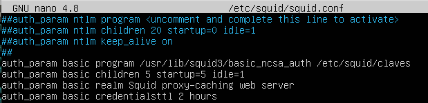

3. Proxy con autenticación básica
1. Introducción
Otra de las funciones de un proxy es el control de quién puede acceder o no a sus servicios. Una de las formas de implementar esta seguridad es mediante el uso de credenciales de acceso (usuario/contraseña).
El escenario de trabajo es el esquema de red que se utilizó en el capítulo anterior. Partiendo del servidor proxy instalado y configurado el firewall, en este capítulo se añade el acceso por credenciales.

Figura 1. Esquema de red - Proxy Squid en ubuntu server con Mikrotik.
2. Configuración de Squid
2.1 Crear la base de datos de usuarios
En primer lugar, antes de comenzar con la configuración en squid, hay que instalar la utilidad htpasswd, que forma parte del paquete apache2-utils para administrar los nombres de usuarios y contraseñas con acceso a contenido restringido, es decir, crear la base de datos de usuarios.
root@perseo:/#apt install apache2-utils
Una vez instalada la utilidad, se procede a crear la base de datos con un usuario inicial. Al ejecutar el comando, se solicita la contraseña del usuario a crear.
root@perseo:/#htpasswd -c /etc/squid/claves usuario01
Figura 2. Creación de la base de datos de usuarios y contraseñas más el usuario 01.
Para crear más usuarios, se realiza igual que antes pero sin la opción -c (crea el fichero de usuarios/contraseñas).
root@perseo:/#htpasswd /etc/squid/claves usuario02
Figura 3. Creación del usuario 02.
Si se lista el fichero claves, se puede observar que las contraseñas están cifradas.
root@perseo:/#cat /etc/squid/claves
Figura 4. Ver los usuarios creados con la clave cifrada.
2.2 Configurar squid
En primer lugar, hay que abrir el fichero squid para su edición.
root@perseo:/#nano /etc/squid/squid.conf
A continuación, hay que buscar la directiva auth_param para poder definir todo el esquema de autenticación. Dado que hay ejemplos de cómo realizar la autenticación en el fichero, lo que se realizará es descomentar y modificar las líneas necesarias y que son las siguientes:
auth_param basic program /usr/lib/squid3/basic_ncsa_auth /etc/squid/claves
auth_param basic children 5 startup=5 idle=1
auth_param basic realm Squid proxy-caching web server
auth_param basic credentialsttl 2 hours
donde,
- auth_param basic program
- /usr/lib/squid3/basic_ncsa_auth , es el programa que se utilizará para hacer la autenticación
- /etc/squid/claves, es el fichero con las contraseñas que se creó en apartado 2.1.

Figura 5. Directiva auth_param.
Crear acl
Si se observa la sección TAG: alc del fichero squid.conf, se puede observar que las acl siguen el siguiente formato:
acl aclname acltype argument ...
acl aclname acltype "file" ...
Donde,
- aclname es el nombre descriptivo que se le pondrá a la acl.
- acltype es el tipo de acl que se está definiendo.
- argument es la lista de parámetros separados por espacios. Por ejemplo, la lista de sitios web permitidos. "file" es el nombre y ruta completa de una archivo que contiene una lista de parámetros, cada uno de ellos en una línea. Por ejemplo, los dominios destino a los que no se permite acceder.
A continuación, se puede observar la sintaxis de algunas algunos tipos de acl recogidos en el fichero /etc/squid/squid.conf:
#
# acl aclname dst [-n] ip-address/mask ... # URL host's IP address [slow]
# acl aclname dstdomain [-n] .foo.com ...
El siguiente paso es crear una acl y para ello, hay que buscar la cadena TAG: acl y moverse al final de los ejemplos y explicación para copiar la siguiente acl:
acl password proxy_auth REQUIRED
Una vez se ha copiado, hay que pegarla al final de la declaración de acl's que se tienen.
Figura 6. Creación de la directiva acl password.
Una vez se han guardado los cambios, el siguiente paso es indicar cuándo se debe utilizar la acl, para ello, hay que buscar la cadena TAG: http_access. En este caso, sí es importante el lugar donde ubicar la directiva que permita utilizar la acl que se acaba de crear.
Entonces, se comenta la directiva allow localnet debido a que ahora interesa permitir el acceso por credenciales y no por ser un equipo de la red y se añade la directiva acl password detrás de la de localhost ya que no se quiere que se pidan credenciales cuando se está accediendo a internet desde el propio servidor proxy.

Figura 7. Añadir directiva http_access.
Para consolidar los cambios, se guarda el fichero y se reinicia el servicio squid.
root@perseo:/#systemctl restart squid.service
Figura 8. Reiniciar el servicio squid.
3. Probar el acceso con credenciales
Desde un equipo de la red interna, se accede desde un navegador web con el proxy configurado y se observa que aparece una ventana con la petición de credenciales. Una vez se introduce un usuario de la base de datos, ya se puede navegar por internet.
Figura 9. Solicitud de credenciales para poder navegar a través del proxy.
Si se accede al log de squid, ejemplo al fichero access.log, se pueden observar las conexiones que se han ido realizando en el proxy.
root@perseo:/var/spool#cat /var/log/squid/access.log
Figura 10. Log de accesos al proxy.
Obra publicada con Licencia Creative Commons Reconocimiento No comercial Compartir igual 4.0